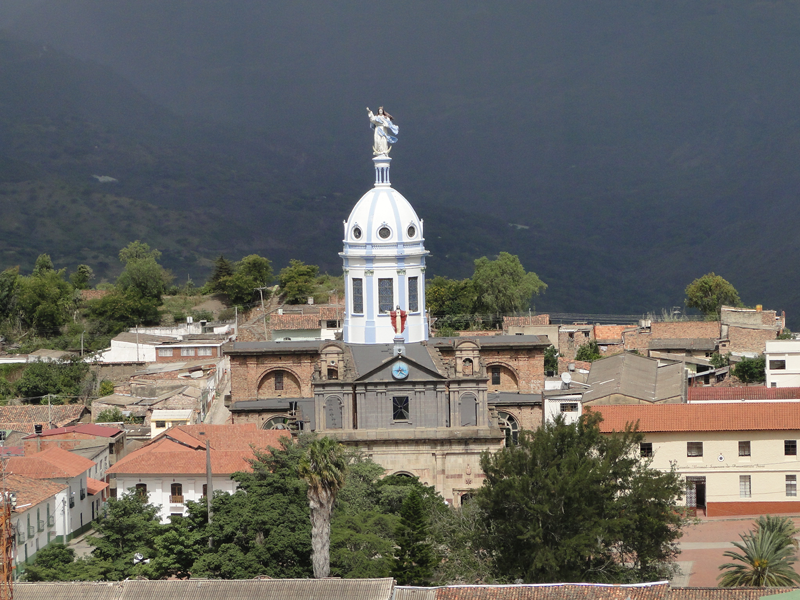
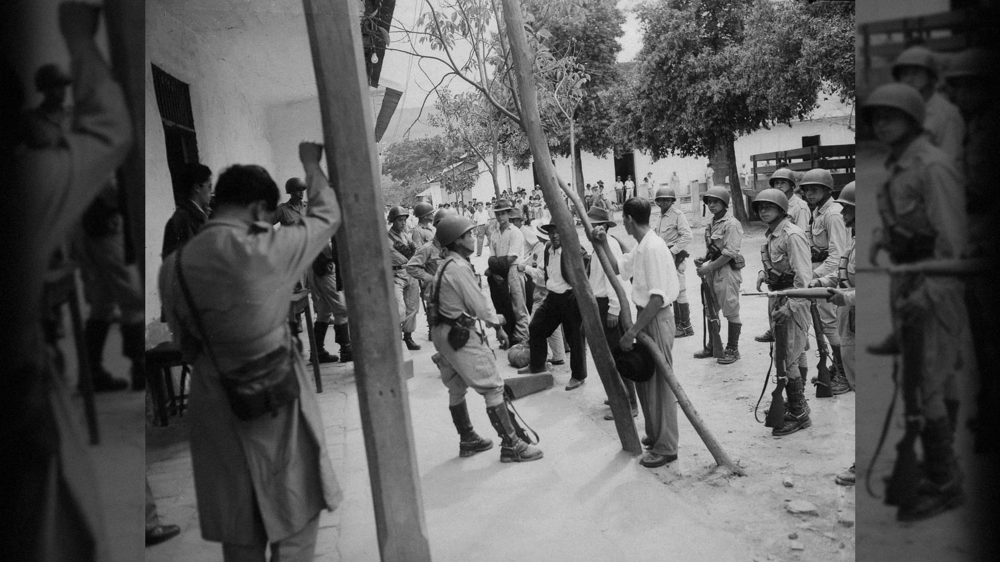
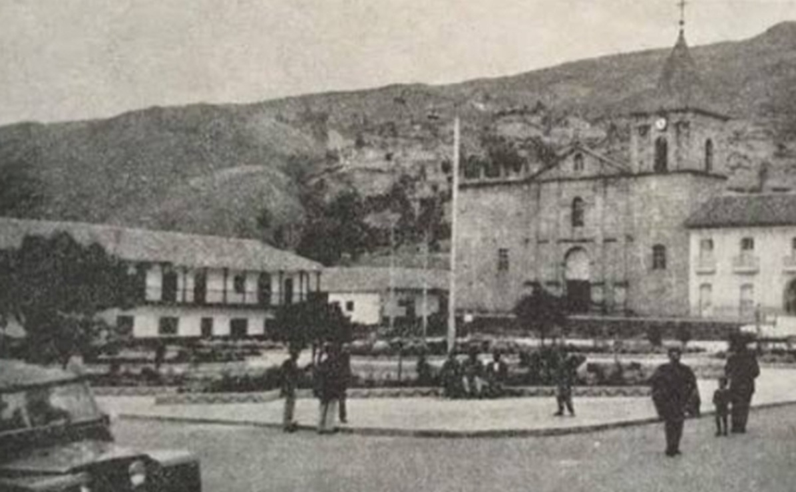
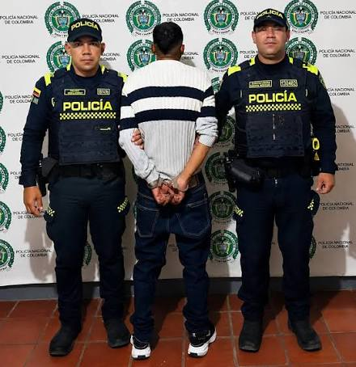

¿Qué se busca comprender?
Las manifestaciones de violencia histórica y las dinámicas del conflicto armado después del año 2000 en Soatá y los municipios vecinos.
UNA MIRADA A LA MEMORIA REGIONAL
Antecedentes del conflicto armado, afectaciones a la población y retos sociales y económicos.
Sergio Esteban Sánchez Caro · Iván Darío Fonseca Bernal · Samuel Julián Orozco Rincón
Miguel Ángel Pérez Márquez · Elkin Julián Reyes Bustamante
Durante mucho tiempo, Boyacá fue representada como un territorio ajeno a las principales afectaciones del conflicto armado. Sin embargo, esa imagen puede ocultar experiencias dolorosas vividas en el norte del departamento.
Las manifestaciones de violencia histórica y las dinámicas del conflicto armado después del año 2000 en Soatá y los municipios vecinos.
A comunidades campesinas, familias, niños, niñas y adolescentes, y a la vida social, económica e institucional de la Provincia Norte.
Para visibilizar a las víctimas, examinar las consecuencias humanitarias y contribuir a reconstruir la memoria histórica regional.
¿Cómo se han manifestado la violencia histórica y el conflicto armado en la Provincia Norte de Boyacá después del año 2000, y qué consecuencias han dejado en la población?
El proyecto busca que la población conozca la historia del conflicto armado y la violencia contemporánea en el norte de Boyacá.
Porque recordar y estudiar estos hechos permite reconocer el sufrimiento de las comunidades, cuestionar el silencio y aportar una mirada académica y social a la memoria regional.
Dar visibilidad a las experiencias de las víctimas y sus familias en los nueve municipios estudiados.
Relacionar las dinámicas nacionales del conflicto con las experiencias específicas del norte boyacense.
Aportar elementos para conversar sobre derechos humanos, reparación, reconciliación y desarrollo rural inclusivo.
Conocer la historia no cambia el pasado, pero ayuda a reconocer a las víctimas y a construir una memoria colectiva más completa.
La meta que guía el desarrollo de la investigación.
Informar acerca de las manifestaciones de violencia histórica, la violencia estructural, la jurisprudencia constitucional sobre el fuero penal militar y las barreras de protección social en la Provincia del Norte de Boyacá y Soatá, para visibilizar el impacto humanitario posterior al año 2000 y aportar a la reconstrucción de la memoria histórica regional.
Acciones concretas que permiten desarrollar el propósito general del proyecto.
Describir la geografía, la división político-administrativa de los nueve municipios y los antecedentes sociohistóricos de la violencia bipartidista.
Examinar hechos, sabotajes viales, incursiones y dinámicas atribuidas a las FARC-EP, el ELN y estructuras paramilitares desde el año 2000.
Estudiar el fuero penal militar y la protección de los derechos humanos a partir del Auto 1163 de 2021 sobre la Base Militar de Soatá.
Revisar el reclutamiento forzado infantil, la restitución de tierras y los posibles límites del registro estadístico de protección del ICBF.
El estudio aborda Soatá y la Provincia Norte de Boyacá, con una mirada histórica y social.
Soatá, Boavita, Covarachía, La Uvita, San Mateo, Sativanorte, Sativasur, Susacón y Tipacoque.
Antecedentes de violencia bipartidista y sus efectos sobre comunidades campesinas.
El documento estudia acciones armadas, afectaciones viales y presencia de actores armados.
Algunos hechos se refieren a municipios vecinos; no deben atribuirse automáticamente a Soatá.
Los documentos conectan distintos periodos y formas de violencia, sin reducirlos a un solo hecho.
El proyecto aborda el papel de los Chulavitas y el drama agrario en la memoria regional.
El documento menciona ataques en Sativanorte y La Uvita y afectaciones a autoridades locales.
Se estudian acciones atribuidas a grupos insurgentes y sabotajes viales, incluido el puente Pinzón en 2011.
Soatá · cifras históricas registradas por el ASIS municipal con información del RUV.
Corte al 30 de junio de 2021
Fuente: ASIS de Soatá 2021, basado en el Registro Único de Víctimas (RUV). La cifra no indica que todos los hechos ocurrieran en Soatá ni corresponde a un solo año.
El ASIS registró víctimas de desplazamiento que habían ingresado a Soatá.
Fuente: ASIS de Soatá 2021. Corte: 30 de junio de 2021.
Necesidad de alojamiento y estabilidad.
Acceso a salud, educación y atención.
Empleo, tierra y redes comunitarias.
Estas son dimensiones que conviene investigar; el registro por sí solo no cuantifica la magnitud de cada impacto en Soatá.
Los datos ayudan a describir el contexto, pero no demuestran que la violencia sea la causa directa de cada indicador.
Fuente: ASIS Soatá 2021.
Indicadores de vulnerabilidad económica citados en el documento de consulta. No son datos actuales ni una medición del efecto de la violencia.
La violencia afecta a las personas, los hogares y la vida colectiva de maneras que no siempre quedan registradas.
Desplazamiento, separación de redes de apoyo, temor y participación comunitaria.
Posibles interrupciones del comercio, transporte, agricultura y turismo.
Gastos de atención, vivienda, reparación y acceso a servicios.
Riesgos de reclutamiento, interrupción educativa y barreras para pedir ayuda.
La memoria importa. La violencia en la región tiene antecedentes históricos y distintas manifestaciones.
Los datos tienen fecha. Los registros de 2018 y 2021 no deben presentarse como cifras actuales.
El impacto es amplio. Población, redes familiares y economía merecen análisis, sin atribuir causalidad sin evidencia.
Fuentes principales de los documentos base. La bibliografía ampliada y los enlaces están en la siguiente diapositiva.
Análisis de Situación de Salud del municipio, con cifras del Registro Único de Víctimas y datos demográficos.
Consultar documento oficial ↗El documento recomienda revisar el tablero actualizado y anotar fecha, municipio, hecho victimizante y filtro usado.
Consultar boletín estratégico ↗Boletín de violencias de noviembre de 2025, útil para revisar indicadores recientes de violencia interpersonal e intrafamiliar.
Consultar boletín ↗Documento de trabajo entregado para la presentación: antecedentes, acciones armadas y consecuencias humanitarias regionales. Las afirmaciones históricas deben contrastarse con la bibliografía citada en el proyecto.




Referencias seleccionadas de los documentos entregados. Los enlaces externos se abren en una nueva pestaña.
Análisis de Situación de Salud (ASIS): municipio de Soatá, Boyacá 2021. Fuente de los registros históricos de víctimas, desplazamiento y población.
Documento oficial ↗Boletín estratégico / Registro Único de Víctimas (RUV). Consultar filtros y fecha de corte al usar cifras actualizadas.
Tablero de consulta ↗Boletín de Violencias, noviembre de 2025. Referencia departamental para revisar indicadores de violencia.
Boletín PDF ↗Conflicto armado en Boyacá: 2005–2018: una guerra invisible, permanente y silenciosa. Editorial UPTC.
DOI / publicación ↗Auto 1163 de 2021, expediente CJU-281. Conflicto de jurisdicciones relacionado con hechos en la Base Militar de Soatá.
Providencia ↗Boletín Estadístico, Dirección de Protección Regional Boyacá. Corte citado en el proyecto: 31 de enero de 2025.
Boletín PDF ↗Una guerra sin edad: informe nacional de reclutamiento y utilización de niños, niñas y adolescentes en el conflicto armado colombiano.
Informe ↗Tres heridos deja ataque guerrillero a Sativanorte, Boyacá. Nota periodística sobre un hecho regional citado en el proyecto.
Nota periodística ↗URT inicia barrido de solicitudes en 7 zonas más de Boyacá.
Nota institucional ↗Violencia en la Provincia Norte de Boyacá después de los 2000 y Violencia en Soatá, Boyacá: documentos, estadísticas y posibles afectaciones sociales, poblacionales y económicas. Material base aportado por el grupo.